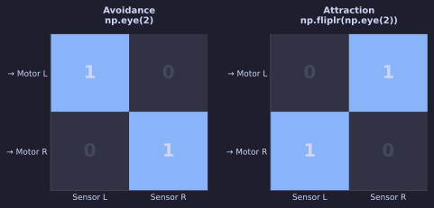
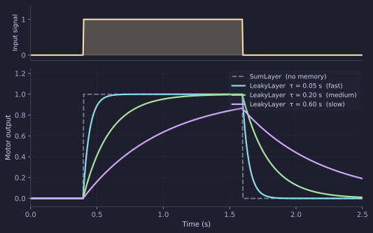

Braitenberg Vehicles — with Neural Layers
In the previous tutorial you built a Braitenberg vehicle by writing the sensor-to-motor mapping directly in loop(). That works perfectly, but there is a cost: the connection strengths are constants baked into your code. Changing them means editing, saving, and reloading the file.
This tutorial implements the same two vehicles using layers and connections. The wiring becomes a weight matrix that the simulator can display and edit live through the network visualiser.
The structure
A neural brain declares three class attributes in addition to its Params:
| Attribute | What it is |
|---|---|
sensors |
List of sensor objects. Each sensor's output is available in loop() as self.<name>. |
layers |
List of neuron layer objects. Each layer has a .output array updated by step_network(). |
connections |
List of (source_name, target_name, weight_matrix) triples. The simulator normalises these to Connection objects internally, so you can also write Connection(src=…, tgt=…, W=…) directly. |
step_network(dt) — called from loop() — reads the sensor attributes, propagates values through the connection graph, and updates every layer's .output.
flowchart LR
S["GradientSensor\nlight"] -->|W 2×2| M["SumLayer\nmotor"]
M --> L["loop()\nreturn mL, mR"]Avoidance with a SumLayer
import numpy as np
from brain_base import BaseBrain, Param
from sensors import GradientSensor
from neurons import SumLayer
class BrainNeuralLight(BaseBrain):
sensors = [GradientSensor(n=2, angle_spread=0.4, name='light')]
motor = SumLayer(activation='linear', name='motor', n=2) # (1)
layers = [motor]
connections = [ # (2)
('light', 'motor', np.eye(2)),
]
speed = Param(60.0, 0, 100, step=1.0, desc='Maximum motor speed')
def setup(self):
pass
def loop(self, dt):
self.step_network(dt) # (3)
mL, mR = self.motor.output * self.speed # (4)
return float(mL), float(mR)
- The layer is a class attribute —
self.motorgives you a reference to it fromloop(). np.eye(2)is the weight matrix: sensor index → motor index, same-side.- Propagates the sensor values through every connection and updates
motor.output. - Scale the raw output (which is in
[0, 1]) to the motor range.
This behaves identically to the code version with the same-side wiring: it avoids light.
The weight matrix is the wiring diagram
The connection matrix W has shape (n_target, n_source), i.e. (2, 2). Entry W[i, j] is the weight from source neuron j to target neuron i.

| Matrix | Meaning |
|---|---|
np.eye(2) |
Sensor L → Motor L, Sensor R → Motor R. Avoidance. |
np.fliplr(np.eye(2)) |
Sensor L → Motor R, Sensor R → Motor L. Attraction. |
To switch from avoidance to attraction, change one line:
Adding memory — the LeakyLayer
A SumLayer passes its input through instantaneously. The motor jumps to full speed the moment the sensor fires, and drops to zero the moment the source moves away. Real muscles — and real motor controllers — don't work like that.
A LeakyLayer is a first-order low-pass filter. Its output approaches the input with time constant tau_rise and decays with tau_decay:

Larger tau → slower, smoother response. The motor no longer chatters when the robot skims the edge of a patch.
from neurons import LeakyLayer # (1)
smooth = LeakyLayer(tau_rise=0.15, tau_decay=0.15, n=2, name='smooth')
motor = SumLayer(activation='linear', n=2, name='motor')
layers = [smooth, motor]
connections = [
('light', 'smooth', np.eye(2)), # sensor → smoother
('smooth', 'motor', np.fliplr(np.eye(2))), # smoother → motor (crossed)
]
LeakyLayeris a drop-in replacement forSumLayer. It stores state betweenloop()calls, so the output remembers where it was on the previous tick.
tau units
tau_rise and tau_decay are in seconds and are applied at the simulation's dt (default 20 ms). tau = 0.15 means the output reaches ~63 % of a step input after 150 ms — about eight simulation ticks.
Editing weights live
Once the brain is running, open the Network editor (the graph icon in the toolbar). Each connection appears as an editable matrix. Changing a weight takes effect immediately — no reload needed. This is the main payoff of the layer representation over direct code.
What to try next
- Add a second layer between
smoothandmotorand give itactivation='relu'— observe how the threshold changes the robot's sensitivity near the edge of a patch. - Explore
AdaptiveLayerwithw > 0andn=2, which oscillates autonomously (half-centre oscillator). Wire a light sensor to its input and watch the oscillation frequency change with stimulus intensity. - Once you have a circuit you like, use Copy Bonsai to export the network to a LBP.Torch workflow and run it on the real robot.